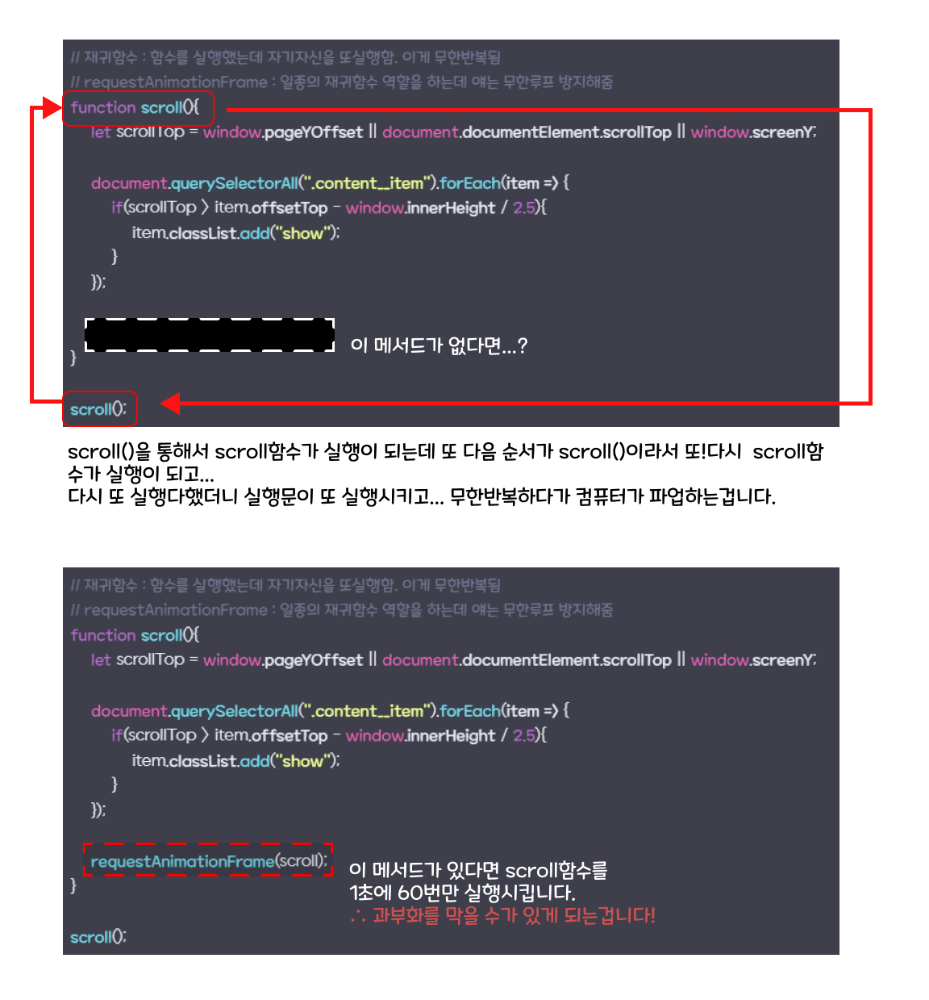
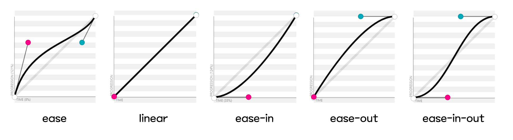

페럴렉스 효과 04
JS 소스
// window.addEventListener("scroll", scrollProgrss); --> 쓰지않는 이유 : 과부화방지 --> requestAnimationFrame를사용함.
// 재귀함수 : 함수를 실행했는데 자기자신을 또실행함. 이게 무한반복됨
// requestAnimationFrame : 일종의 재귀함수 역할을 하는데 얘는 무한루프 방지해줌
function scroll(){
let scrollTop = window.pageYOffset || document.documentElement.scrollTop || window.screenY;
document.querySelectorAll(".content__item").forEach(item => {
if(scrollTop > item.offsetTop - window.innerHeight / 2.5){
item.classList.add("show");
}
});
requestAnimationFrame(scroll);
}
scroll();
■ 핵심 찍먹하기🪓
✔ addEventListener("scroll")을 대체하자!
소스의 맨첫번째 주석에도 적혀있습니다만... 저희는 여태
'window.addEventListener("scroll", scrollProgrss)'를 사용했었는데요, 사실 이 방법은 좋은 방법이 아니랍니다.
이유는 저희는 모르겠지만 스크롤이 될때마다 컴퓨터가 계속해서 반응해야 하므로 살려달라고 외치고 있을지도 모릅니다...
그래서 우리는 requestAnimationFrame를 활용해 보기로 하겠습니다.
✔ requestAnimationFrame()
requestAnimationFrame(반복할 함수)
이 메서드는 함수를 1초에 60번 동작시킵니다.
후에 설명드리겠지만 위 소스에서 이 메서드가 빠지면 scroll()함수는 컴퓨터가 과부하걸릴때까지 계속
무한 궤도에 빠질거에요.
아실지 모르겠지만 비슷한 역할을 하는 메서드로 setInterval도 있습니다.
다만 이 메서드보다는 지금 보고 계시는 requestAnimationFrame가 프레임 누락등에 좀더 강해서 좋다고 하네요.
(정확한 이유를 이해못하겠어요...저는...)
이미지로 같이 이해하기
✔ cubic-bezier (큐빅 베지어)
큐빅 베지어는 CSS에서 transition 속성이나 transition-timing-function에서 전환 시작부터 끝가지의 효과를 제어하는데 사용됩니다.
모델링에 사용되는 곡선모델이라고 할 수 있습니다.
transition: all 0.5s cubic-bezier(0.25, 0.25, 0.75, 0.75)
( 위 구문은 예시입니다. )
보통 transition을 사용할 때 'ease, ease-in, linear등' 이런 키워드를 많이 사용하지 않으셨나요?
이 키워드값들은 큐빅베지어로 변환해본다면 다음과 같습니다.

감이 오실까요?
이런 기본키워드 값 말고 큐빅베지어를 사용하시면 본인이 원하는 전환 효과를 만들어 낼 수 있습니다.
'크롬 - 개발자 도구'에서도 미리 볼 수 있습니다.

애니메이션효과의 장인이 되고 싶다면 이 큐빅 베지어를 많이 많이 사용해보시고 잘 활용해 보세요!
큐빅 베지어 해볼 수 있는 사이트
🙇♀️ 틀린 점에 대한 지적은 언제나 환영합니다 🙇♂️